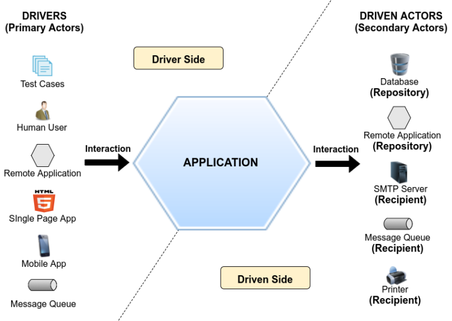
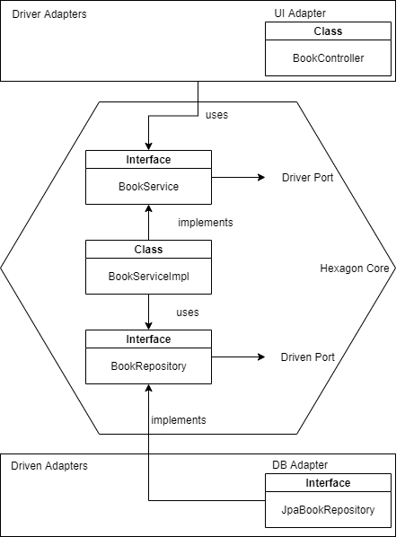

1. Overview
Hexagonal Architecture is an architectural design pattern that makes the application highly maintainable and fully testable.
It keeps the important parts of the application isolated from outer components.
We integrate components into the core through ports and adapters.
The core comprises business logic, and domain layers.
Also known as Ports and Adapters Pattern, it has a lot of benefits visible in the long term.
Above all, testing and changing the application are easy and cost-effective.

https://jmgarridopaz.github.io/
2. Principles
The principles of Hexagonal Architecture are:
- Application, domain, and infrastructure are separate
- Outer components depend on the domain and service layer, not vice versa
- Isolate the core through ports and adapters
3. Hexagon Implementation

Domain
public class Book {
private Long id;
private String name;
//constructors //getters and setters
}Driven Ports
A driven port is an interface for a functionality, needed by the application for implementing the business logic. Such functionality is provided by a driven actor. So driven ports are the SPI (Service Provider Interface) required by the application.
public interface BookRepository {
Book findById(Long id);
}Driver Ports
The Driver Ports offer the application functionality to drivers of the outside world. Thus, driver ports are said to be the use case boundary of the application. They are the API of the application.
public interface BookService {
Book getBook(Long id);
}Driver Ports also have an implementation in the core.
public class BookServiceImpl implements BookService {
private BookRepositoryPort bookRepositoryPort;
public BookServiceImpl(BookRepositoryPort bookRepositoryPort) {
this.bookRepositoryPort = bookRepositoryPort;
}
public Book getBook(Long id) {
return bookRepositoryPort.findById(id);
}
}Now we can decide on the details of the application. Until now, we could defer the decisions regarding what technologies and libraries we will use to implement outer components. Therefore, we implement the adapters for the database and REST UI.
4. Adapters Implementation
DB Driven Adapter
A driven adapter implements a driven port interface, converting the technology agnostic methods of the port into specific technology methods.
@Component
public class JpaBookRepositoryAdapter implements BookRepositoryPort {
@Autowired
private HAAJpaRepository haaJpaRepository;
@Override
public Book findById(Long id) {
Optional<BookEntity> bookEntityOptional = haaJpaRepository.findById(id);
BookEntity bookEntity = bookEntityOptional.orElseThrow(BookDoesNotExistException::new);
return bookEntity.toBook();
}
}public interface HAAJpaRepository extends JpaRepository<BookEntity, Long> {}@Entity
public class BookEntity {
@Id
@GeneratedValue(strategy = GenerationType.AUTO)
private Long id;
@Column(name = "name")
private String name;
//constructors //getters and setters
public Book toBook(){
return new Book(this.id, this.name);
}
}UI Driver Adapter
A driver adapter uses a driver port interface, converting a specific technology request into a technology agnostic request to a driver port.
@RestController
public class BookControllerControllerAdapter implements BookControllerPort {
@Autowired
private BookService bookService;
@GetMapping("/books")
public ResponseEntity getBook(@RequestParam Long id) {
try {
return ResponseEntity.ok(bookService.getBook(id));
} catch (BookDoesNotExistException e){
return ResponseEntity.ok("We don't have this book!");
} catch (Exception e){
return ResponseEntity.badRequest().build();
}
}
}5. Configuration
We can also use Dependency Injection in our core by adding an external configuration.
@Configuration
public class SpringBeans {
@Bean
BookService bookService(final BookRepositoryPort bookRepositoryPort) {
return new BookServiceImpl(bookRepositoryPort);
}
}Book endpoint is accessible here: http://host:8080/books?id=1
6. Conclusion
In conclusion, Hexagonal Architecture lets us plug or unplug components as we see fit without major costs.
The UI, database and other components are plugins. We can easily change or swap the plugins.
We achieve all this through Dependency Inversion and Dependency Injection.
The code is available over GitHub.
You can read more about Hexagonal Architecture on https://jmgarridopaz.github.io